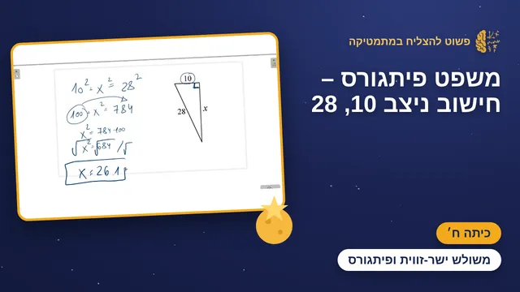
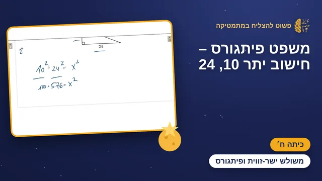
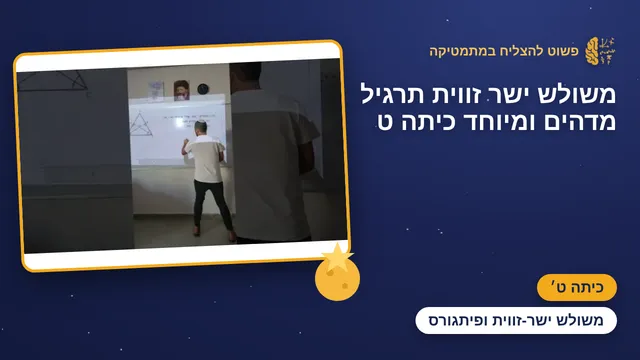
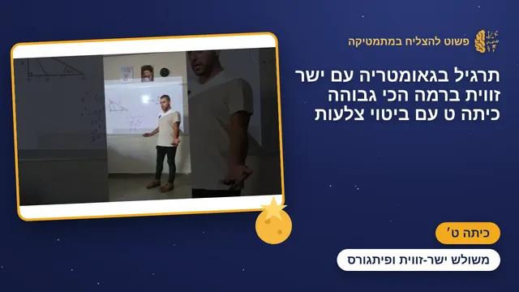
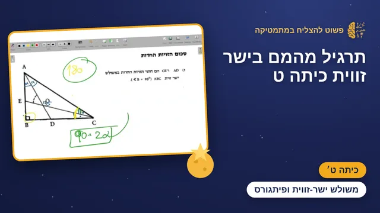
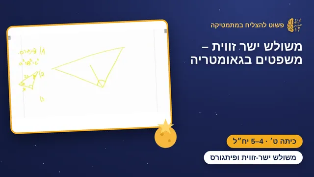

פשוט להצליח במתמטיקה › כל הנושאים › משולש ישר-זווית ופיתגורס
משולש ישר-זווית ופיתגורס – סרטוני הסבר ותרגול
11 סרטוני הסבר ותרגול בנושא משולש ישר-זווית ופיתגורס – לכיתה ח׳, כיתה ט׳, שאלון 471, שאלון 571. כל נושא מוסבר מהקל אל הקשה: קודם הרעיון, אחר כך תרגילים, ובסוף שאלות בסגנון בגרות. הכול בחינם, בשיטת "פשוט להצליח".
רוצים לעקוב אחרי ההתקדמות?נרשמים בחינם, וכל סרטון שראיתם מסומן ✓. ממשיכים מכל מכשיר.
הצטרפות בחינם ←משולש ישר-זווית ופיתגורס – כיתה ח׳ כל הנושאים של כיתה ח׳ ←
 משפט פיתגורס במלבן – חישוב BE ואלכסון AC
משפט פיתגורס במלבן – חישוב BE ואלכסון AC משפט פיתגורס – הקדמה ודוגמה 3 4 5
משפט פיתגורס – הקדמה ודוגמה 3 4 5
משפט פיתגורס – חישוב ניצב 10, 28
משפט פיתגורס – חישוב יתר 10, 24 משפט פיתגורס כיתה ח
משפט פיתגורס כיתה ח משפט פיתגורס · סרטון קצר
משפט פיתגורס · סרטון קצרמשולש ישר-זווית ופיתגורס – כיתה ט׳ כל הנושאים של כיתה ט׳ ←
משפט פיתגורס במלבן – חישוב BE ואלכסון AC
משולש ישר זווית תרגיל מדהים ומיוחד כיתה ט
תרגיל בגאומטריה עם ישר זווית ברמה הכי גבוהה כיתה ט עם ביטוי צלעות
תרגיל מהמם בישר זווית כיתה ט הסבר משולש ישר זווית – 3 משפטים כיתה ט
הסבר משולש ישר זווית – 3 משפטים כיתה ט
משולש ישר זווית – משפטים בגאומטריה